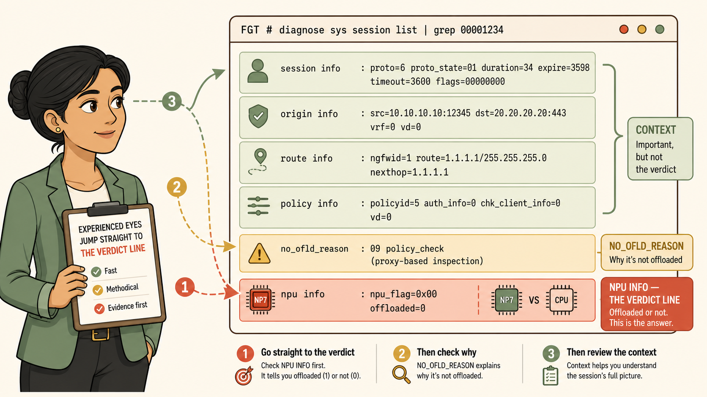
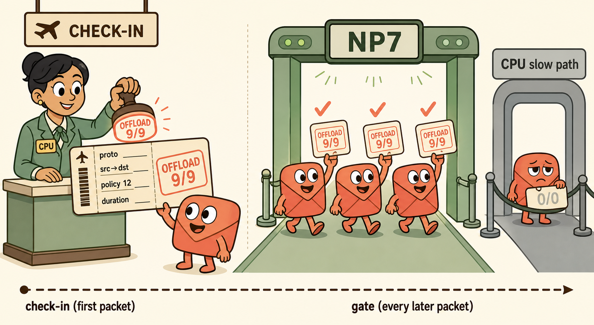
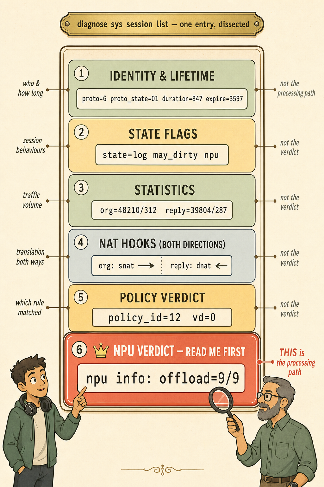
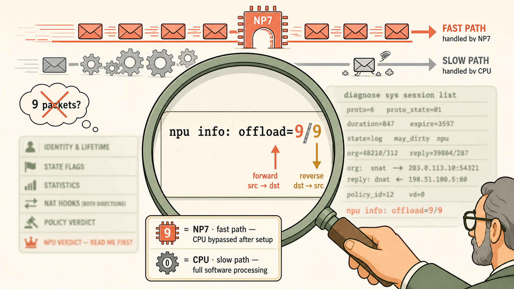
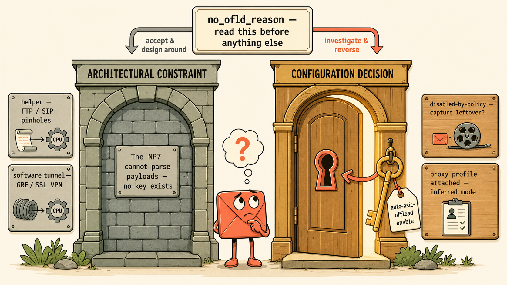

One annotated dissection of the most important artefact in FortiOS troubleshooting — and the exact reading order an experienced engineer uses.
Every field in a session entry answers a different question — but only one line delivers the verdict.
Sessions 39, 40, and 02 all ended at the same place: reading diagnose sys session list output under pressure. This page turns that skill into a single spatial picture — where your eyes go first, what each region tells you, and what it deliberately doesn't.
💭THINK FIRST · READING ORDER
When Marcus starred those session entries during the trading floor recovery, he read them top to bottom like a paragraph — and got lost in NAT hooks and hex flags before ever reaching the line that mattered. An experienced engineer reads a session entry the way a doctor reads an X-ray: verdict first, context second.
The session entry records dozens of fields, but a senior engineer investigating a performance complaint reads exactly one line first. Which line — and why does everything else count as context rather than evidence?
Why does this output live under diagnose rather than get? What does that placement tell you about what you're actually looking at?
Q1 — MODEL ANSWER
The npu info line. It is the only line that tells you where processing is happening — NP7 fast path or CPU slow path. Every other field (proto, duration, NAT translations, byte counts) describes the session itself but says nothing about the processing path. For a performance investigation, the verdict is the evidence; the rest is context you pull in only after the verdict raises a question.
Q2 — MODEL ANSWER
get commands produce operational summaries formatted for administrators. diagnose exposes raw internal engine state. The session table lives under diagnose because it shows what the forwarding engine is actually doing — not a summary of what the configuration says should happen. When you need proof, you need engine state.
SECTION 01
Why the Entry Exists — and the Reading Order

The senior engineer's eye-path: verdict line first, reason line second, context last.
images/s1-reading-order.png
Flat minimalistic but highly detailed cartoon illustration, modern vector-art aesthetic. Warm cream background (#faf5e9), coral accents, muted gold highlights, sage greens, soft brown outlines, clean bold line work, no gradients, no photorealism, no 3D. Composition: a large cream-coloured terminal window occupies the right two-thirds of the frame, drawn as a friendly rounded rectangle with a soft brown outline, containing six horizontal rows of stylised "text" (drawn as simple line-blocks, not real words) representing a FortiOS session entry. The bottom row of the terminal is highlighted in coral and labelled in small clean type "npu info — THE VERDICT LINE". The row directly above it is highlighted in muted gold and labelled "no_ofld_reason". The four upper rows are sage green and collectively labelled "context". On the left third, a calm female network engineer (Priya-like: dark hair in a bun, sage-green blazer, confident slight smile) stands holding a clipboard, drawn in the same flat style. From her eyes, a dashed coral arrow numbered "1" arcs directly to the coral verdict line at the bottom of the terminal, skipping every other row. A second dashed gold arrow numbered "2" arcs to the gold reason row. A third thin sage arrow numbered "3" sweeps up to the context rows. Perspective: flat frontal, generous white space, structured grid composition. Lighting: even and warm, no shadows beyond soft flat shapes. Small decorative touches: a tiny NP7 chip icon (coral square with pin legs, labelled "NP7") beside the verdict line, and a small CPU icon (gold square labelled "CPU") beside it with a versus dash between them. Overall mood: calm, methodical, educational — the picture should teach that experienced eyes jump straight to the bottom verdict line before reading anything else.
The session table exists because re-evaluating every packet from scratch would be ruinously expensive. When the first packet of a connection arrives, the CPU does the full expensive work once — route lookup, policy evaluation, NAT decision, offload eligibility — and writes the outcome into a session entry. Every subsequent packet in that connection simply follows the recorded verdict. The entry is therefore not a log; it is a standing instruction that governs live traffic.
That is why the reading order matters. The entry mixes two very different kinds of information: the verdict (where packets are being processed, and why) and the context (who is talking to whom, for how long, through which policy). Reading top-to-bottom drowns the verdict in context. Reading verdict-first turns a wall of text into a two-second diagnosis.
Analogy — The Boarding Pass
A session entry is a boarding pass stamped once at check-in — and the fast-track stamp is the only thing the gate ever reads.
Check-in desk = CPU first-packet evaluation. The one moment where a human (the CPU) inspects your documents, checks the rules (firewall policy), and decides your path.
The boarding pass = the session entry. Name, seat, flight time — that's proto, src/dst, duration. Useful context, but not what determines your experience at the gate.
The fast-track stamp = offload=9/9. If the stamp is there, every checkpoint afterwards waves you through at hardware speed. No stamp (offload=0/0) means the slow queue for the entire journey.
The stamp is issued once. Changing airport policy after check-in doesn't reprint passes already in passengers' hands — exactly as policy changes never retroactively rewrite existing session verdicts.
The gate staff = the NP7. They read the stamp; they never re-interview you. The NP7 forwards according to the verdict — it does not re-evaluate policy.

Stamped once at check-in; read at every gate; never re-issued mid-journey.
📷 images/a1-boarding-pass.png — add this image
Flat minimalistic but highly detailed cartoon illustration, modern vector-art aesthetic. Warm cream background, coral accents, muted gold highlights, sage greens, soft brown outlines, bold clean line work, no gradients, no photorealism. Composition: split scene. Left half: an airport check-in desk drawn flat and friendly; a smiling check-in agent (representing the CPU, wearing a gold badge literally labelled "CPU") stamps a large oversized boarding pass held by a small cheerful packet character (a rounded coral envelope with stubby legs and wide eyes). The stamp being pressed onto the pass glows coral and reads "OFFLOAD 9/9". The boarding pass itself shows flat mock fields labelled in tiny clean type: "proto", "src→dst", "policy 12", "duration". Right half: a fast-track airport lane drawn as a sage-green corridor with a gate scanner arch labelled "NP7"; three identical packet characters stride confidently through the arch, each holding up the stamped pass; the scanner emits a small coral checkmark above each one. Behind them, a separate slower grey queue labelled "CPU slow path" shows one droopy-eyed packet character waiting behind a rope barrier, its pass visibly stamp-less with "0/0" in muted grey. Perspective: flat frontal side-view, single horizon line, generous spacing between elements. A thin dashed timeline arrow runs along the bottom from "check-in (first packet)" to "gate (every later packet)" reinforcing that the decision happens once. Mood: playful but precise; every object maps to exactly one FortiOS concept.
The three-step eye-path: ① npu info — what's the verdict? ② If no_offload → no_ofld_reason — is it a constraint or a decision? ③ Only then read context fields (proto, tunnel, policy_id) to confirm the story.
🧠
MENTAL NOTE
A session entry is a standing instruction, not a log. The verdict is written once, at first-packet time, by the CPU — and every later packet obeys it without re-evaluation. Read the entry the way it is used: verdict first, context second.
ASK A QUESTION
ADD A NOTE
💭THINK FIRST · MASTER ANATOMY
Below is a complete entry from a healthy Vaultline trading session — the proof Priya asked Marcus for. Before you read the dissection, test whether the regions already have meaning for you.
The entry contains two mirrored NAT lines — one dir=org act=snat, one dir=reply act=dnat. Why must a single session record both directions, and what does that tell you about why offload=X/Y has two numbers?
proto=6 proto_state=01 — without memorising codes, what category of information is this region giving you, and when in a troubleshooting flow would you actually consult it?
Q1 — MODEL ANSWER
A firewall session is bidirectional by nature — the reply traffic must be matched to the same session and un-NATted correctly, so the entry records the translation for both the originating (org) and reply directions. Because the two directions are tracked separately, they can also be offloaded separately — which is exactly why the verdict reads offload=X/Y: X is the forward direction's processor, Y is the reverse direction's.
Q2 — MODEL ANSWER
It is identity-and-lifecycle context: proto=6 is TCP, and proto_state describes where the connection sits in its lifecycle (01 = established for TCP). You consult it after the verdict raises a question — e.g. "is this session even long-lived enough to have been offloaded?" or "is this a protocol that needs a session helper?" It never tells you where packets are being processed.
SECTION 02
The Master Dissection

The master anatomy plate — six regions, one verdict. Click to expand.
images/s2-master-anatomy.png
Flat minimalistic but highly detailed cartoon illustration in the style of a vintage anatomical dissection plate, redrawn as modern vector art. Warm cream background (#faf5e9), coral accents, muted gold highlights, sage greens, soft brown outlines, bold clean line work, no gradients, no photorealism, no 3D. Composition: centred, a tall cream parchment-style card (like a museum specimen plate) containing a stylised FortiOS session entry rendered as six stacked horizontal bands, each band a rounded rectangle in its own tint. From top to bottom: Band 1 sage green labelled "IDENTITY & LIFETIME" containing small clean monospace-style text "proto=6 proto_state=01 duration=847 expire=3597"; Band 2 pale gold labelled "STATE FLAGS" containing "state=log may_dirty npu"; Band 3 soft sage labelled "STATISTICS" containing "org=48210/312 reply=39804/287"; Band 4 pale blue-grey labelled "NAT HOOKS (BOTH DIRECTIONS)" containing two mirrored mini-arrows: "org: snat →" and "reply: dnat ←"; Band 5 muted gold labelled "POLICY VERDICT" containing "policy_id=12 vd=0"; Band 6, the widest and boldest band at the bottom, coral with a thicker outline and a small crown icon, labelled "NPU VERDICT — READ ME FIRST" containing "npu info: offload=9/9". On both sides of the plate, elegant thin annotation lines (like anatomy diagram callouts, soft brown, ending in small dots) extend outward to handwritten-style labels: left side labels describe WHAT each region tells you ("who & how long", "session behaviours", "traffic volume", "translation both ways", "which rule matched"); right side labels describe WHAT IT DOES NOT tell you, each in muted grey italic ("not the processing path", "not the verdict", "not the verdict", "not the verdict", "not the verdict") with the bottom coral band's right label reading in coral bold: "THIS is the processing path". Above the plate, a small brass-style plaque reads "diagnose sys session list — one entry, dissected". Two tiny flat cartoon engineers stand at the bottom corners examining the plate: on the left, a young man with headphones around his neck (Marcus-like, curious expression, pointing up at band 6); on the right, a bearded senior engineer with glasses calmly holding a magnifying glass over the coral band. Perspective: flat frontal, generous margins, museum-poster spacing. Mood: scholarly, precise, slightly playful — a specimen plate that makes the six-region structure and the primacy of the bottom verdict band unforgettable.
Here is the real artefact — the session Marcus starred, captured after the rollback restored NP7 offloading on the trading VLAN. Read it once top-to-bottom now; after this section you should never need to read one that way again.
What kind of connection this is (6 = TCP, 17 = UDP), where it sits in its lifecycle (01 = established TCP), how long it has lived, and when it will age out.
Where packets are processed.
② State flags
state=log may_dirty npu, tunnel=/
Session behaviours: logging is on; may_dirty means the session can be flagged for re-check if policy changes; the npu flag shows it was marked for hardware offload. An empty tunnel=/ rules out software-tunnel constraints.
The per-direction verdict — the flag signals intent; the npu info line confirms outcome.
③ Statistics
org=… / reply=… bytes & packets
Volume in each direction — useful for spotting one-way traffic or a session that never really exchanged data.
The processing path.
④ NAT hooks
dir=org act=snat, dir=reply act=dnat
The exact translation applied to each direction — the mirrored pair that lets reply packets find their way home.
The processing path — but it explains why the verdict has two numbers.
⑤ Policy verdict
policy_id=12, vd=0
Which firewall policy admitted this session and which VDOM owns it — your pivot point into show firewall policy 12.
Whether that policy's settings resulted in offload — the policy is the cause, the npu line is the effect.
⑥ NPU verdict
npu_state, npu info: offload=9/9
The verdict. Where each direction of this session is actually being processed, right now.
— (this is the line everything else exists to explain)
Common misconception: the npu flag in the state line (region ②) and the npu info line (region ⑥) are not the same evidence. The flag says the session was marked for offload; the npu info line shows what actually happened, per direction. On the exam, if both appear in an exhibit, the npu info line is authoritative.
🧠
MENTAL NOTE
Six regions, one verdict. Regions ①–⑤ answer "who, how long, how much, translated how, admitted by what." Only region ⑥ answers "processed where." A session is tracked — and offloaded — per direction, which is why NAT hooks come in mirrored pairs and the verdict comes as X/Y.
ASK A QUESTION
ADD A NOTE
💭THINK FIRST · THE VERDICT LINE
Priya didn't want a general explanation — she wanted proof that trading sessions were back on the NP7. The proof is nine characters long: offload=9/9. But only if you can decode it under pressure.
In offload=9/9, what exactly do the first 9, the slash, and the second 9 each represent — and what is the classic misreading of these numbers?
What would offload=0/0 tell Priya, and what is the very next thing you would look at — before touching any configuration?
Q1 — MODEL ANSWER
X/Y are per-direction processor codes: X = forward direction (source → destination), Y = reverse. Code 9 = NP7 fast path; code 0 = CPU slow path. So offload=9/9 means both directions bypass the CPU after session setup. The classic misreading is treating the numbers as packet counts or a quantity of offloading — they are identifiers of which engine is doing the work, nothing more.
Q2 — MODEL ANSWER
offload=0/0 means both directions are on the CPU — the session is riding the slow path in full. The next move is not a config change; it is reading no_ofld_reason on the same entry. One glance categorises the problem as an architectural constraint you must accept or a configuration decision you can reverse — and that categorisation determines everything you do next.
SECTION 03
Close-Up: Decoding the Verdict Line

The verdict line under the magnifying glass: two directions, two processor codes.
images/s3-verdict-line.png
Flat minimalistic but highly detailed cartoon illustration, modern vector-art aesthetic. Warm cream background, coral accents, muted gold highlights, sage greens, soft brown outlines, bold clean lines, no gradients, no photorealism. Composition: a giant flat magnifying glass (soft brown handle, sage rim) dominates the centre, held from the lower-right by the hand of a partially visible senior engineer. Inside the lens, hugely enlarged, the single line "npu info: offload=9/9" in clean monospace lettering on a cream card. The two 9s are the heroes: the first 9 is coloured coral with a small upward arrow labelled "forward · src → dst"; the second 9 is muted gold with a downward arrow labelled "reverse · dst → src". The slash between them is drawn as a tiny road divider. Beneath the lens, a small legend card with two rows: a coral chip icon (square with pin legs) labelled "9 = NP7 · fast path — CPU bypassed after setup" and a grey gear icon labelled "0 = CPU · slow path — full software processing". Around the lens, outside the magnified area, the rest of the session entry is drawn as faint, blurred sage line-blocks — deliberately out of focus to reinforce that everything else is background context. Above the composition, two miniature parallel lanes illustrate the consequence: the top coral lane shows three happy packet envelopes zipping left-to-right through a chip-shaped archway labelled "NP7" with motion lines; the bottom grey lane shows one packet trudging through a queue of gears labelled "CPU". A small crossed-out thought bubble near the legend shows "9 packets?" with a red X — explicitly killing the packet-count misreading. Perspective: flat frontal, strong central focus, generous negative space. Mood: forensic, satisfying clarity — the image should make offload=9/9 readable at a glance forever.
The verdict line packs several fields, but the exam — and production — really turn on one: offload=X/Y. X is the forward direction, Y is the reverse, and the number is an internal processor code, not a count. Code 9 is the NP7; code 0 is the CPU. Because each direction carries its own verdict, asymmetry is possible — which is precisely why Fortinet prints two numbers instead of one.
The supporting fields corroborate the story rather than change it: ips_offload reports whether IPS inspection is riding the hardware path, and epid/ipid are the NP7's internal egress/ingress port identifiers for each direction — visible proof the forwarding engine has programmed the session into silicon. You will rarely need them, but recognising them stops an exhibit from feeling alien.
Exam tip: exhibits will show the entire entry — thirty-plus lines — and ask a one-line question. That's a time trap by design. Train the reflex: scan for npu info, decode offload=X/Y, and only read upward if the question demands context. offload=9/9 was literally the proof Priya accepted.
🧠
MENTAL NOTE
offload=X/Y → X forward, Y reverse; 9 = NP7 fast path, 0 = CPU slow path. Processor codes, never packet counts. 9/9 is the stamp on the boarding pass — both directions fast-tracked, CPU consulted only at check-in.
ASK A QUESTION
ADD A NOTE
💭THINK FIRST · CONSTRAINT VS DECISION
Daniel's question was the hard one: are there sessions that flat-out cannot be offloaded, regardless of policy? The answer lives in a single field — and in the framework that turns that field into an engineering decision.
An FTP transfer shows no_ofld_reason: helper. Why can no amount of policy tuning ever move this session onto the NP7 — what is the NP7 fundamentally unable to do here?
Another entry shows no_ofld_reason: disabled-by-policy. How does your response to this reason differ in kind — not just in detail — from your response to helper?
Q1 — MODEL ANSWER
FTP negotiates its data-connection ports inside the application payload. The session helper — CPU software — must read that payload and dynamically open pinholes. The NP7 is a forwarding engine, not a payload parser: it cannot follow the negotiation. The session therefore stays on the CPU for its entire lifetime. This is an architectural constraint — there is nothing to configure away.
Q2 — MODEL ANSWER
disabled-by-policy means an engineer set auto-asic-offload disable on the matching policy — a configuration decision, and decisions can be reversed. Your response shifts from acceptance ("this is how the platform works") to investigation ("who disabled it, why, and is the reason still valid?"). Often it's a leftover from a packet-capture troubleshooting session that was never re-enabled.
SECTION 04
Close-Up: no_ofld_reason — Constraint or Decision?

Two kinds of "no": the sealed archway you accept, and the locked door you can open.
images/s4-constraint-decision.png
Flat minimalistic but highly detailed cartoon illustration, modern vector-art aesthetic. Warm cream background, coral accents, muted gold highlights, sage greens, soft brown outlines, bold clean line work, no gradients, no photorealism, no 3D. Composition: two large doorways side by side on a cream wall, framed like a museum diptych, with a single packet character (rounded coral envelope with legs and expressive eyes) standing between them looking up, deciding. LEFT DOORWAY: a solid stone archway drawn in sage-grey blocks, permanently bricked up with no handle and no keyhole; carved into its lintel in clean capitals: "ARCHITECTURAL CONSTRAINT". Mounted beside it, three small stone plaques listing reasons in monospace style: "helper — FTP / SIP pinholes", "software tunnel — GRE / SSL VPN", each plaque with a tiny icon (a payload scroll being read by a CPU gear for helper; a coiled tube for tunnel). A small sign hanging on the bricks reads "The NP7 cannot parse payloads — no key exists". The stone doorway's colour language is cool, muted, final. RIGHT DOORWAY: a warm wooden door in muted gold with a large friendly coral keyhole and an oversized brass key hanging on a hook beside it, tagged with a label reading "auto-asic-offload enable". Its lintel reads "CONFIGURATION DECISION". Beside it, two wooden plaques: "disabled-by-policy — capture leftover?" and "proxy profile attached — inferred mode", each with a tiny icon (a paused packet-capture reel; a clipboard profile sheet). The wooden door stands slightly ajar with warm light leaking out, and a small coral arrow points from the key to the keyhole. Between and above the doors, a signpost reads "no_ofld_reason — read this before anything else", with two arrows: a grey arrow to the stone arch labelled "accept & design around", a coral arrow to the wooden door labelled "investigate & reverse". Perspective: flat frontal, symmetric diptych composition, generous spacing. Mood: a fable-like decision scene — one glance should permanently encode that some offload denials are walls and some are merely locks.
When the verdict is 0/0, the entry usually tells you why — and this is where the entry from Friday night's incident differed from Marcus's healthy capture:
FortiOS CLI — the Friday-night entry (contrast)
npu_state=0x000001 no_offloadno_ofld_reason: disabled-by-policy← auto-asic-offload set to disable on the policy
The framework from Session 40 turns this field into a fork in the road. Constraints are architectural — the platform cannot do otherwise, and your job is to accept them and design around them. Decisions are configuration — a human chose this, and your job is to find out whether the choice is still justified.
no_ofld_reason
Category
Root cause
Engineer's move
helper
Constraint
Protocol (FTP, SIP, H.323) negotiates ports inside payloads; only CPU software can watch and open pinholes. NP7 forwards — it doesn't parse.
Accept. Design around it (e.g. keep helper-dependent traffic off latency-critical paths).
software tunnel
Constraint
GRE and SSL VPN terminate in software on the CPU. (IPsec is the exception — NP7 has native crypto engines.)
Accept — or redesign the transport (e.g. IPsec instead of GRE/SSL VPN where offload matters).
disabled-by-policy
Decision
auto-asic-offload disable set on the matching policy — often a leftover from a packet-capture session.
Investigate the change history; re-enable once the original reason has expired.
proxy-mode profile
Decision (often accidental)
A proxy-requiring security profile on the policy forces CPU processing for the whole session — inferred, not explicitly configured, in 7.6.
Ask whether proxy inspection is genuinely required here; consider flow-based equivalents or the split-policy / VDOM design.
Frequent distractor: the exam loves offering "enable auto-asic-offload" as the fix for a session showing no_ofld_reason: helper. It's a trap — no policy setting overrides an architectural constraint. Categorise the reason before evaluating any answer that changes configuration.
Remember the Vaultline thread: Friday's incident was a decision reason wearing an innocent face — a junior engineer attaching a proxy profile without realising the mode consequence. The proposed Trading VDOM exists precisely to make that class of decision impossible on the latency-critical path.
🧠
MENTAL NOTE
Read no_ofld_reason before any other command. Helper and software tunnels are walls — accept and design around. disabled-by-policy and proxy profiles are locks — a key exists, so investigate who locked the door and whether the reason still stands.